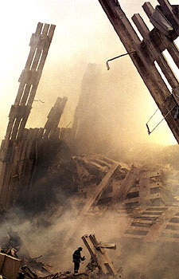

Marie-Claude Dubé, 13 Septembre 2001, 11h00
Salut Guy,
J'ai bien aimé ton texte sur l'absurdité du monde dans lequel
nous vivons.
Je suis présentement à Los Angeles, prisonnière au merveilleux
pays de l'Oncle Sam, cette supposée « Nation of Freedom »
un peu paradoxal non?!?
Il me semble que la phrase « The stuff that dreams are made of »,
prend un tout autre

sens, à vrai dire on devrait réécrire cette phrase et changer le mot dreams pour nightmares! Je devais passer la journée à San Diego mardi,au zoo... mais je me suis rapidement rendu compte que les animaux ne sont pas tous en cage. Ma réaction ce matin là en regardant la télé à 6h15 am et en constatant l'horreur de cette nouvelle qui a fait le tour de la planète à la vitesse de l'éclair a été de me dire une chance que c'est arrivé à cette heure, au moins les bureaux étaient fermés... mais comme je venais à peine de sortir des bras de Morphée et n'avais « obsiously » pas toute ma tête, j'avais oublié le 3 heures de décalage... Bref tout ce dont j'ai envie maintenant c'est de me retrouver parmi les miens dans MON pays "platte" et sans nouvelles à sensations, devant la télé, MA télé, « éffouarée » sur MON divan avec un bol de pop corn à écouter un film loué au Super Vidéotron et oublier toute cette folie pour l'espace d'un court instant. Des atrocités du genre nous font réaliser à quel point nous sommes fragiles et qu'il n'y a désormais plus rien de sacré! J'ai bien hâte de revenir au pays, je pense que je vais apprécier les petites choses, aussi banales puissent-elles être!Bonne fin de semaine!
Marie-Claude